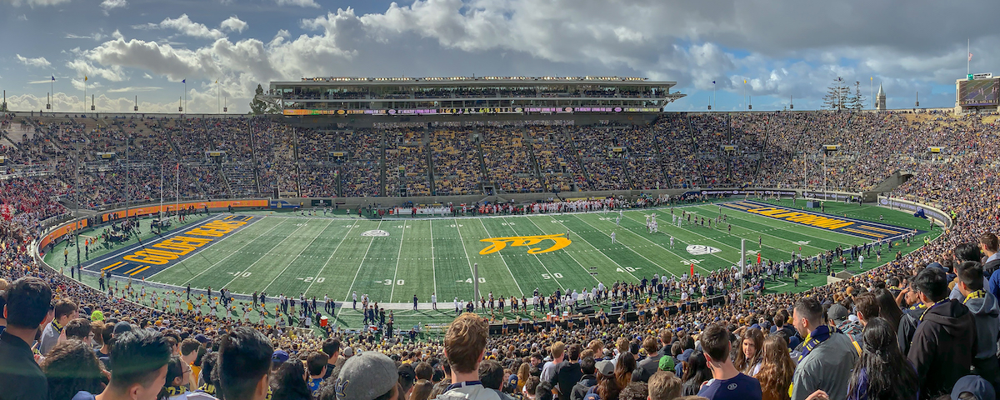

I'm Cole Striler, a senior at University of California, Berkeley.
Cole Striler
from IPython.display import Image Image("cover_small.jpg")

These are the courses I have taken in data science:
Other links: